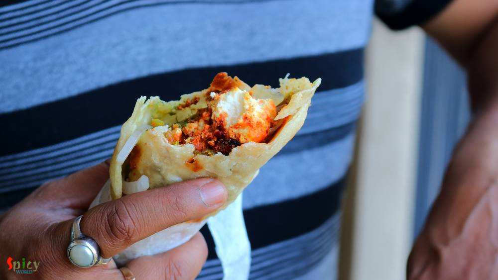

Simple and Easy Recipes
Paneer Kathi Roll / Paneer Frankie
© 2016 Spicy World, Published on: Sep 25, 2018
Paneer Kathi Roll is loved by both vegetarian and non vegetarian people all across India. Paneer Frankie or roll is nothing but stuffed wrap, cooked paneer cubes with some onion slices and green chutney will be stuffed inside a cooked flour paratha. It will be easy for you if you divide the recipe in 3 parts - making stuffing, making paratha, assembling the rolls. You can serve this as evening snack or brunch. This is a kid friendly recipe, just adjust the heat level according to their taste. Now its time for you to enjoy the recipe with detailed video.

Ingredients
- For paneer:
- 15-20 small paneer cubes.
- 2-3 Tablespoons of yogurt.
- 1 Tablespoon of ginger, garlic green chili paste.
- Salt.
- 1 Teaspoon of black pepper powder.
- 1 Tablespoon of red chili powder.
- 2 Tablespoons of tandoori masala powder.
- 3 Tablespoons of oil.
- 1 small onion, thinly sliced.
- 1 small capsicum, thinly sliced.
- 2 green chilies, chopped.
- For paratha:
- 1 cup of all purpose flour.
- A big pinch of salt.
- Half cup of oil.
- Warm water.
- Some dry flour.
- For assembling:
- Some raw onion slices.
- 4-5 Tablespoons of green chutney.
- Rectangular piece of papers.


Steps
In a mixing bowl, add yogurt, ginger, garlic green chili paste, black pepper powder, red chili powder, tandoori masala powder, some salt and 1 Tablespoon of oil. Mix well.
Then add paneer cubes, mix well and let it rest for 1 hour.
To make the dough for paratha, mix some salt and 1 Tablespoon of oil in all purpose flour. Then gradually add warm water and start mixing. Go slow with the water.
Make a soft and knead it for 2-3 minutes.
Apply some oil all over the surface, keep it covered for 30 minutes.
In the mean time, heat 2 Tablespoons of oil in a pan.
Then add marinated paneer and cook for 5 minutes on medium flame.
Add onion, capsicum and chopped green chilies, cook for 2 minutes. Do not overcook it otherwise the veggies will become soggy.
Then turn off the heat.
Take a lemon size portion from the dough, roll it within you palm.
With the help of some dry flour, flatten it to a semi thin disc.
Place the disc on hot tawa.
Keep it for few seconds, then flip it to the other side.
Add 1 Tablespoon of oil from the sides.
Fry for a minute, then again flip it to the other side and add another Tablespoon of oil. Fry for 1-2 minutes by flipping sides. Take it out in a plate.
To assemble the roll, place one paratha in a plate.
Then add some cooked paneer at one side of the paratha.
Spread some onion slices and 1 and half Tablespoons of green chutney all oer the paneer.
Roll the paratha tightly and secure one end with a rectangular piece of paper.
Your paneer kathi roll is ready
Serve this hot as evening snack or brunch ...
")